Cesky: |
PicoQVGA - Minimalistic QVGA Display on Raspberry Pico
Version 1.0, september 2021
(c) Miroslav Nemecek
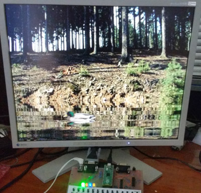
Obsah
PicoQVGA is a minimalist library that generates VGA signal for VGA monitor on Raspberry Pico at 320x240 / 8 bit resolution. On the library code, the function and use of the PIO and DMA controllers is explained in detail in the form of a tutorial. Despite the simplicity of the library (the kernel takes about 400 lines in C), the library is sufficient for a considerable range of applications. PicoQVGA is a greatly simplified version of the PicoVGA full library.
Color signal output is provided by 8 resistors, R1 to R8. The color components are: 2 bits for blue (B0 to B1), 3 bits for green (G0 to G2) and 3 bits for red (R0 to R2). The 8-bit output ensures a small RAM requirement, which is not wasteful in the Raspberry Pico (the 320x240/8 image buffer takes 76 KB out of the available 256 KB).
The library generates separate HSYNC and VSYNC synchronization signals. With a little modification, only one common sync signal CSYNC can be generated (not included in the code), which saves 1 pin of the Pico, but some older VGA monitors do not support this mode (not many of them).
The diagram additionally shows the wiring of the audio PWM output, which is used in some sample programs, but it is not necessary.
In the sample programs, the host computer's console keyboard is used for control, using the USB programming connector and a console program (begPutty).
If you wish to modify the wiring, the color signals B0 to R2 can be moved to other pins. However, it must always be the case that the signals must maintain the same continuous series. This is because the PIO allows you to change the start of the pin array, but does not allow you to change the pin order. Similarly, the HSYNC and VSYNC signals can be on different pins, independent of the color signals, but again, their sequence must be maintained - i.e., the VSYNC pin must immediately follow the HSYNC pin.

As first step, we need to schedule the timing of the output signal. We base the timing on the VGA signal, but use half resolution (QVGA). The video lines will be doubled. We know the following from the VGA standard:
VGA resolution:
VGA vertical timing:
VGA horizontal timing:
The default system clock of the Raspberry Pico is 125 MHz. Dividing the clock by 10 gives 12.5 MHz as the closest number to the required pixel clock (12.5875 MHz). While we could use this frequency (and it is included in the source code as an alternative), it could mean that 2 pixels on the sides of the image may already be outside the visible area of the monitor. Therefore, we prefer to choose the next closest higher system clock frequency, 126 MHz. The pixel clock for QVGA in this case will be 12.6 MHz (0.079365 us per pixel) and the image will be fully visible.
As we can find out with the included PicoClock program, we can get the system clock of 126 MHz by setting PLL to the values: vco=1008 MHz, fbdiv=84, pd1=4, pd2=2.
For optimal work with PIO we will clock the PIO with the system clock divided by 2. For 1 pixel we will need 5 clock cycles of PIO clock. From the given data we will calculate the required PIO timing:
We added 1 clock cycle to the front and back porch (symmetrically to keep the image centered) because the active image is 2 clock cycles shorter than the prescribed timing.
The PIO module can be said to be one of the main features that takes the Raspberry Pico up several levels. The PIO is like another processor within the processor. The PIO module is mainly focused on programming the communication interface, so don't expect it to do calculations, for example. It will be used where precise timing is needed.
Raspberry Pico has two independent PIO modules. Each PIO module has a program memory of 32 instructions and 4 state machines (SM). The state machines of one PIO module share the program memory together, but otherwise their function is independent.
We start with the PIO program. The PIO program is the instructions for the PIO module. The length of the program is limited to 32 instructions. We can load separate programs for each of the SM modules into the PIO program memory, or we can share programs, limited only by the memory size of 32 instructions. The PIO program is compiled with the "pioasm" compiler, which is part of the Raspberry Pico SDK. In the original SDK you will find the Linux version of the compiler, here in the attached package is the Windows version.
The PIO processor instruction set is not large, it is only 9 instructions (each instruction is 16 bits long), but as you will see, they are sufficient for communication programs. These instructions are:
The following registers are available to the PIO processor:
Explanation of shift registers. When sending data through the PIO, the main processor writes the transmitted 32-bit word to the TX FIFO transmit queue. The transmit queue is 4 positions long. If reception is not required, it can be merged with the receive queue to a length of 8 positions. From the transmit queue, the PIO program reads the transmitted word with the PULL instruction and stores it in the output shift register OSR. From the OSR register, the program reads the data bit by bit using the OUT instruction. Alternatively, it can write the data directly to the output pins using the OUT instruction.
When data is received, the PIO processor receives the pin state bit by bit with the IN instruction into the ISR register. The PUSH instruction transfers the ISR register to the RX FIFO receive queue, where the main processor reads the 32-bit value.
For all PIO instructions, each instruction implicitly takes exactly 1 clock cycle of the PIO clock, independent of other main processor activity. This allows programs to be written with precise timing. Instructions may take longer if there is a glitch in the FIFO queue, if the main processor cannot process the data in time.
Each PIO instruction contains a 5-bit field used for 2 purposes:
How many bits of the 5-bit array will be used for delay and how many for side-set can be determined by configuring the SM. In our driver, we will use 2 side-set bits to output the HSYNC and VSYNC synchronization signals. The remaining 3 bits will be used for the delay, so each instruction can take 1 to 8 clock cycles.
One of the bits of the 5-bit array can be used as flag whether the side-set array is used or not. However, this does not mean that all the remaining bits are usable for delay. It only means whether or not we need to specify a side-set for an instruction. We prefer to choose a fixed array split and specify the side-set for each instruction.
Let's move on to the PIO program. At the beginning of the program we will give the following definitions:
.program qvga .side_set 2 ; HSYNC and VSYNC output (2 bits) .define NOSYNC 0 ; no sync, output image or blanking .define HSYNC 1 ; HSYNC pulse (or CSYNC pulse) .define VSYNC 2 ; VSYNC pulse .define VHSYNC 3 ; HSYNC and VSYNC pulse .define BPP 8 ; number of bits per pixel
The first row indicates the name of the program. Firstly, this name is used to refer to the generated labels and secondly, it is used to separate programs if one file contains multiple programs.
The second row defines the side-set settings. The number 2 indicates that 2 bits of the 5-bit array will be used in each instruction as output values to the output pins. The remaining 3 bits will be used for additional delay.
The BPP value indicates the number of bits per pixel. The program code can be used for color depths of 1, 2, 4, 8, 16 and 32 bits. It must be taken into account that the length of the written image data must be aligned to a 32-bit word. We will use 8-bit pixels. So the image data must be aligned to 4 pixels.
The other rows are the signal value definitions for the side-set. The HSYNC and VSYNC signals must be on the pins immediately following each other. The VGA signal requires a negative sync pulse shape - i.e. at rest the signals are HIGH, only during the pulse the level drops to LOW. This condition can be prepared by our definition, but for clarity we prefer to use positive polarization in the program and choose to negate the output signal in the output pin configuration.
The program will consist of short sections where each section will generate one type of signal. We will start with the section that will generate the HSYNC signal.
; ===== [3 instructions] HSYNC pulse, N=delay in clock cycles - 3 ; starts HSYNC at time 0 public hsync: jmp x--,hsync side HSYNC ; [N+1] loop public entry: ; program entry point out x,27 side HSYNC ; [1] get next loop counter N out pc,5 side HSYNC ; [1] jump to next function
The "public hsync" row is a public label. It means that the compiler will generate C code with the label values so that the main program can use them.
The first instruction, "jmp x--,hsync", is a program loop with a conditional jump. The instruction looks in the X register and, if its value is non-zero, decrements the X value and jumps to the specified label. If the value is zero, it continues on and does not change the value of X. If the X register contains an N value at the beginning, the entire loop is executed in N+1 clock cycles. The next 2 rows take 2 clock cycles. Thus, if we want to achieve a certain execution time for the entire loop, we must set the value of X at the beginning 3 less than the desired time.
The "public entry:" row is the entry point into the program. This is where we direct the program after it starts. This ensures that the first control word is loaded.
The next 2 rows read the control word from the OSR register and jump to the next program segment. We don't need to use the PULL instruction because the configuration will be set to automatically load the OSR register from the TX FIFO transmit queue. The first instruction, "out x,27", loads 27 bits from the OSR register into the X register. We will use this value as the counter for the following program segment. The second instruction, "out pc,5", loads 5 bits into the PC register. PC is a 5-bit program counter, setting its value will jump to another address in the program.
The OSR output register will shift to the right (to the lower bits) during the OUT instruction. This is due to the format of the image data - a pixel at a lower address needs to be transmitted before one at a higher address. In reality, the data from OSR to X is not transferred bit by bit, but as a whole bit segment, so the direction of the OSR shift does not affect the order of the transferred bits.
The additional parameter "side HSYNC" ensures that the HSYNC signal is set as active during the execution of this program section (the side-set output pins are set to "1").
The program segments activating the VSYNC signal and the HSYNC+VSYNC signal are created in a similar way.
; ===== [3 instructions] VSYNC pulse, N=delay in clock cycles - 3 ; starts VSYNC at time 0 public vsync: jmp x--,vsync side VSYNC ; [N+1] loop out x,27 side VSYNC ; [1] get next loop counter N out pc,5 side VSYNC ; [1] jump to next function ; ===== [3 instructions] VSYNC and HSYNC pulse, N=delay in clock cycles - 3 ; starts HSYNC and VSYNC at time 0 public vhsync: jmp x--,vhsync side VHSYNC ; [N+1] loop out x,27 side VHSYNC ; [1] get next loop counter N out pc,5 side VHSYNC ; [1] jump to next function
Let's take a closer look at the dark generating section.
; ===== [4 instructions] DARK pulse, N=delay in clock cycles - 4 ; sets blanking at time 0, starts NOSYNC at time 0 public dark: mov pins,null side NOSYNC ; [1] dark output dark_loop: jmp x--,dark_loop side NOSYNC ; [N+1] loop .wrap_target ; wrap jump target out x,27 side NOSYNC ; [1] get next loop counter N out pc,5 side NOSYNC ; [1] jump to next function
Compared to previous sections, the row "mov pins,null" has been added. The row will set the output color pins to 0, since the null register represents the value zero. If we needed the opposite value, we would use the option to perform a value inversion during instruction execution.
Finally, we are left with a section to send the image data to the color output.
; ===== [3 instructions] output pixels at 5 clocks per pixel, N=number of pixels-2 ; number of pixels must be multiple of: 1 at BP=32, 2 at BPP=16, 4 at BPP=8, 8 at BPP=4, 16 at BPP=2, 32 at BPP=1 ; Output first pixel at time 0 public output: out pins,BPP side NOSYNC [2] ; [3] output pixel jmp x--,output side NOSYNC [1] ; [2] loop (N+1 pixels) out pins,BPP side NOSYNC [2] ; [3] output pixel .wrap ; wrap jump to .wrap_target
The first instruction, "out pins,BPP", fetches 8 bits (containing data for 1 pixel) from the OSR register and writes them to the color output pins. The second instruction is a loop counter. If the X register contains N at the beginning, this loop sends N+1 image pixels to the output.
In addition to the side-set array, the instructions contain a delay, specified in square brackets []. This is the time in clock cycles added to the base instruction execution time, which is 1. The first loop instruction (out) will take 3 clock cycles, and the second instruction (jmp) will take 2 clock cycles. So in total, one pass through the loop will take 5 clock cycles.
Now if we were to end this section with the fetch X and jump instructions, which take 2 clock cycles, the last pixel would be 7 clock cycles long instead of 5. Therefore, we output last pixel with another "out" instruction. It will take 3 clock cycles, the following jump instruction will take 2 clock cycles and thus we will meet the requirement of last pixel length of 5 clock cycles.
On entry to the segment, the X register must contain the number of pixels reduced by 2.
The last segment is not terminated with 2 'out' instructions as in the previous cases, but is terminated with a ".wrap" symbol. Wrap is a property used for loops. The PIO processor allows one program address to be marked with a ".wrap" label and if it encounters this address, it will immediately jump to another address marked with a ".wrap_target" label. This is used to create loops, with ".wrap" at the end of the loop and ".wrap_target" at the beginning of the loop. The wrap has the effect of an unconditional jump, but with the difference that the jump does not take 1 clock cycles, but is executed immediately, without delay. This can be used to speed up the loop and shorten the program. We do not use it here in the loop, but to shorten the program - the wrap performs the jump on the jump instruction in the previous segment and thus we can save 2 instructions on the last segment.
We compile the program with the command "pioasm.exe -o c-sdk qvga.pio qvga.pio.h". The generated file contains C code definitions with the compiled program, symbolic labels and supporting subroutines.
We will prepare a function that initializes the PIO and SM. For clarity, I will introduce the variables and definitions immediately before using them. First, we will load PIO program into memory.
#define QVGA_PIO pio0 // QVGA PIO #define QVGA_SM 0 // QVGA state machine uint QVGAOff; // offset of QVGA PIO program // load PIO program QVGAOff = pio_add_program(QVGA_PIO, &qvga_program);
In the definition we have specified that we will use PIO0 and SM0 for the VGA output. But we could leave it up to the SDK library to determine the free PIO and SM and use variables instead of constants.
The pio_add_program function takes the compiler-generated structure and writes the program instructions in it to the PIO SM program memory. Note that the PIO program memory is available as 32 ports of 16 bits each. The function locates a free space from the end of the program memory, stores the program there and returns the offset of the beginning of the program. We could boot the program to a fixed address (using the ".origin" command when compiling), but this more free way makes it easier to combine the program with other programs.
We will configure output pins.
// QVGA port pins #define QVGA_GPIO_FIRST 2 // first QVGA GPIO #define QVGA_GPIO_NUM 8 // number of QVGA color GPIOs, without HSYNC and VSYNC #define QVGA_GPIO_LAST (QVGA_GPIO_FIRST+QVGA_GPIO_NUM-1) // last QVGA GPIO #define QVGA_GPIO_HSYNC 10 // QVGA HSYNC/CSYNC GPIO #define QVGA_GPIO_VSYNC (QVGA_GPIO_HSYNC+1) // QVGA VSYNC GPIO // configure GPIOs for use by PIO for (i = QVGA_GPIO_FIRST; i <= QVGA_GPIO_LAST; i++) pio_gpio_init(QVGA_PIO, i); pio_gpio_init(QVGA_PIO, QVGA_GPIO_HSYNC); pio_gpio_init(QVGA_PIO, QVGA_GPIO_VSYNC); // set pin direction to output pio_sm_set_consecutive_pindirs(QVGA_PIO, QVGA_SM, QVGA_GPIO_FIRST, QVGA_GPIO_NUM, true); pio_sm_set_consecutive_pindirs(QVGA_PIO, QVGA_SM, QVGA_GPIO_HSYNC, 2, true); // negate HSYNC and VSYNC output gpio_set_outover(QVGA_GPIO_HSYNC, GPIO_OVERRIDE_INVERT); gpio_set_outover(QVGA_GPIO_VSYNC, GPIO_OVERRIDE_INVERT);
In the definitions we have chosen that the color port is 8 GPIO pins, starting with GPIO2. HSYNC signal is on GPIO10 and VSYNC on GPIO11.
The pio_gpio_init function sets the output pins to a mode where they are controlled directly from the PIO. The pio_sm_set_consecutive_pindirs command sets the pins as output. For the HSYNC and VSYNC pins, we set the inversion of the output - this is so that we can use positive polarization in the PIO program. But it is not necessary and we can work with negative polarization of signals in the program.
We will prepare the structure for SM configuration.
// prepare default PIO program config pio_sm_config cfg = qvga_program_get_default_config(QVGAOff); // map state machine's OUT and MOV pins sm_config_set_out_pins(&cfg, QVGA_GPIO_FIRST, QVGA_GPIO_NUM); // set sideset pins (HSYNC and VSYNC) sm_config_set_sideset_pins(&cfg, QVGA_GPIO_HSYNC);
The qvga_program_get_default_config function was prepared by the PIO program compiler. In addition to preparing the default configuration structure, it includes wrap label settings (function sm_config_set_wrap) and side-set mode settings (function sm_config_set_sideset). We pass the offset to the program that was previously returned by the function to load the program into memory.
The sm_config_set_out_pins function tells SM which pin the output pins start on and how many pins it is. This is the mapping for the OUT and MOV instructions. This means that if we write some data to the output port PINS with the OUT or MOV instructions, the data will be written directly to the output pins. For example, if the pins start at GPIO2, bit 0 of the data sent will be written to the GPIO2 port.
Similarly, the sm_config_set_sideset_pins function maps the side-set pins by setting the starting pin number. The number of pins is not set here, it was determined in the earlier sm_config_set_sideset function.
#define QVGA_CLKDIV 2 // SM divide clock ticks // join FIFO to send only sm_config_set_fifo_join(&cfg, PIO_FIFO_JOIN_TX); // PIO clock divider sm_config_set_clkdiv(&cfg, QVGA_CLKDIV); // shift right, autopull, pull threshold sm_config_set_out_shift(&cfg, true, true, 32);
In the next step, we attach the RX FIFO receive queue to the TX FIFO transmit queue - we will not receive data, we will only transmit, so we can increase the queue length to 8 levels.
We derive the PIO clock from the system clock by dividing by 2. The output of one pixel in the PIO program will take 5 PIO clock cycles to achieve a pixel clock of 12.6 MHz.
Set the output shift register OSR. It will shift to the right (the lower byte of the image data will go out first), the pull will be done automatically with a 32 bit limit.
We will send configuration structure to the SM. In the parameter we will specify the entry point from which the program will start. However, we will not start the SM yet.
// initialize state machine pio_sm_init(QVGA_PIO, QVGA_SM, QVGAOff+qvga_offset_entry, &cfg);
The data will not be sent to the PIO by the software processor, but by the DMA controller. This is because we don't want to overload the processor unnecessarily, and also because the processor would not ensure continuous data transfer. For this we need to prepare buffers whose contents will be sent to the PIO.
As we know from our PIO program, the basis of the control is 32-bit words containing the X counter settings and the jump address. We will prepare a macro for this.
// PIO command (jmp=program address, num=loop counter) #define QVGACMD(jmp, num) ( ((u32)((jmp)+QVGAOff)<<27) | (u32)(num))
In the macro, 'jmp' is the address of the jump. We will enter here the label values generated by the compiler. Inside the macro, the offset of the start of the program is added to the labels to ensure the correct jump value. The jump address will be shifted to bits 27..31 where it will be expected by the PIO program. On the lower 27 bits we add the value for the X counter. However, we must not forget to subtract the necessary corrections from the value.
We will need 4 buffers.
#define WIDTH 320 // display width #define QVGA_TOTAL 2002 // total clock ticks #define QVGA_HSYNC 240 // horizontal sync clock ticks #define QVGA_BP 121 // back porch clock ticks #define QVGA_FP 41 // front porch clock ticks // Scanline data buffers (commands sent to PIO) u32 ScanLineImg[3]; // image: HSYNC ... back porch ... image command u32 ScanLineFp; // front porch u32 ScanLineDark[2]; // dark: HSYNC ... back porch + dark + front porch u32 ScanLineSync[2]; // vertical sync: VHSYNC ... VSYNC(back porch + dark + front porch) // image scanline data buffer: HSYNC ... back porch ... image command ScanLineImg[0] = QVGACMD(qvga_offset_hsync, QVGA_HSYNC-3); // HSYNC ScanLineImg[1] = QVGACMD(qvga_offset_dark, QVGA_BP-4); // back porch ScanLineImg[2] = QVGACMD(qvga_offset_output, WIDTH-2); // image // front porch ScanLineFp = QVGACMD(qvga_offset_dark, QVGA_FP-4); // front porch // dark scanline: HSYNC ... back porch + dark + front porch ScanLineDark[0] = QVGACMD(qvga_offset_hsync, QVGA_HSYNC-3); // HSYNC ScanLineDark[1] = QVGACMD(qvga_offset_dark, QVGA_TOTAL-QVGA_HSYNC-4); // back porch + dark + front porch // vertical sync: VHSYNC ... VSYNC(back porch + dark + front porch) ScanLineSync[0] = QVGACMD(qvga_offset_vhsync, QVGA_HSYNC-3); // VHSYNC ScanLineSync[1] = QVGACMD(qvga_offset_vsync, QVGA_TOTAL-QVGA_HSYNC-3); // VSYNC(back porch + dark + front porch)
Individual video lines start with HSYNC pulse, followed by back porch, image data and front porch. The image video line uses the ScanLineImg and ScanLineFp buffers. During generation, we start with the ScanLineImg buffer. The first word contains an invocation of the hsync program segment that activates the HSYNC signal. In the length entry, we set the HSYNC length to 240 clock cycles, but we need to reduce it by 3, which is the basic wait loop overhead.
HSYNC is followed by back porch - which is dark, for 121 clock cycles. We have to reduce the count by 4.
This is followed by the command to send the image data. The command jumps to the "output" handler, with a count of WIDTH-2. We will not send further data from the buffers, but directly from the image memory. After the image data, we will send front porch, from the ScanLineFp buffer. The front porch must always be sent after the image data, as it will ensure that the image is darkened to black. Any subsequent HSYNC signal does not set the color anymore.
Now you may be wondering - how does the PIO program distinguish image data from control words? Simple - it doesn't. :-) PIO has a good feature in that, when software works properly, it remains constantly synchronous with the incoming data, so even after a long time, there is no non-synchronicity.
We use the ScanLineDark buffer to display a dark line with no image, in a vertical front and back porch. The buffer contains only the HSYNC signal followed by the dark image until the end of the line.
The ScanLineSync buffer generates the VSYNC signal and differs from the dark line signal only by activating the signal for VSYNC. It does not set the black color on the image pins because we assume that the black color is set from the previous lines.
In addition to the data buffers, for the data DMA, we need the control buffers, for the control DMA. More details in the following paragraphs.
// Scanline control buffers #define CB_MAX 8 // size of one scanline control buffer (1 link to data buffer requires 2x u32) u32 ScanLineCB[2*CB_MAX]; // 2 control buffers // control buffer 1 - initialize to VSYNC ScanLineCB[0] = 2; // send 2x u32 (send ScanLineSync) ScanLineCB[1] = (u32)&ScanLineSync[0]; // VSYNC data buffer ScanLineCB[2] = 0; // stop mark ScanLineCB[3] = 0; // stop mark // control buffer 1 - initialize to VSYNC ScanLineCB[CB_MAX+0] = 2; // send 2x u32 (send ScanLineSync) ScanLineCB[CB_MAX+1] = (u32)&ScanLineSync[0]; // VSYNC data buffer ScanLineCB[CB_MAX+2] = 0; // stop mark ScanLineCB[CB_MAX+3] = 0; // stop mark
From the previous rows we already know what data we want to send to the PIO and how to process it further. And as I already mentioned, we will not send them programmatically, but using a DMA controller. For each video line we want to send several data buffers. We could activate the DMA transfer programmatically for each buffer, which is quite a lot of tasks. Raspberry Pico has a better solution for this purpose - chaining DMA controllers. Instead of configuring the data DMA for each buffer separately, we let another DMA do it.
The chaining will work as follows. The data will be sent to the PIO by the first DMA channel, the data channel. When it completes the desired task, it will activate a new transmission of the second DMA channel, the control channel. The control DMA channel will transfer additional control information to the data channel setup and start the data channel running. The data for the control DMA is stored in the control buffer. The last control data contains a value of zero. The control DMA also transfers this value to the data DMA channel settings, but the data DMA recognizes the zero value, indicating the end of the transfer, and activates the IRQ signal. This triggers an interrupt to the main processor, which reconfigures the control DMA for a new transfer. An IRQ is generated at the end of each video line. The interrupt handler activates the transmission for the next video line and in the meantime prepares the buffers for the next transmission.
First, we prepare the control DMA channel configuration.
#define QVGA_DMA_CB 0 // DMA control block of base layer #define QVGA_DMA_PIO 1 // DMA copy data to PIO (raises IRQ0 on quiet) // prepare DMA default config dma_channel_config cfg = dma_channel_get_default_config(QVGA_DMA_CB); // increment address on read from memory channel_config_set_read_increment(&cfg, true); // increment address on write to DMA port channel_config_set_write_increment(&cfg, true); // each DMA transfered entry is 32-bits channel_config_set_transfer_data_size(&cfg, DMA_SIZE_32); // write ring - wrap to 8-byte boundary (TRANS_COUNT and READ_ADDR_TRIG of data DMA) channel_config_set_ring(&cfg, true, 3); // DMA configure dma_channel_configure( QVGA_DMA_CB, // channel &cfg, // configuration &dma_hw->ch[QVGA_DMA_PIO].al3_transfer_count, // write address &ScanLineCB[0], // read address - as first, control buffer 1 will be sent out 2, // number of transfers in u32 (number of transfers per one request from data DMA) false // do not start yet );
The dma_channel_get_default_config function prepares the default configuration structure.
Using the channel_config_set_read_increment function we will select automatic incrementing of the read address. The control DMA reads data from the control buffers and therefore needs to move the address to the next word after each read.
Using the channel_config_set_write_increment function we will enable automatic incrementing of the write address. The control DMA channel will transfer words from the control buffer directly to the control registers of the data DMA channel. Two words of 32 bits each will be transferred on each transfer, so automatic address incrementing is required.
The size of one unit of data to be transferred is set to 32 bits by the channel_config_set_transfer_data_size function. Each of the DMA control registers of the data channel is 32 bits.
The channel_config_set_ring function sets the write address ring size to 8 bytes. Two words of 32 bits each will be transmitted, for a total of 8 bytes. The parameter "3" represents the power of 2 of the ring data size, i.e. 8 bytes. The DMA channel will transfer 2 words to the control registers, then the pointer will be reset back by 8 bytes.
The dma_channel_configure function configures the DMA channel according to the prepared configuration structure. The third register of the fourth set of register aliases is selected as the write address - i.e. the trans_count and read_addr registers. Each DMA channel can be controlled by 4 registers and these registers are arranged in 4 variations of order. For each variant, writing to the 4th register activates the transfer of the DMA channel. The individual aliases of the DMA registers are:
// +0x0 +0x4 +0x8 +0xC (Trigger) // 0x00 (alias 0): READ_ADDR WRITE_ADDR TRANS_COUNT CTRL_TRIG // 0x10 (alias 1): CTRL READ_ADDR WRITE_ADDR TRANS_COUNT_TRIG // 0x20 (alias 2): CTRL TRANS_COUNT READ_ADDR WRITE_ADDR_TRIG // 0x30 (alias 3): CTRL WRITE_ADDR TRANS_COUNT READ_ADDR_TRIG ... we use this!
Each transmission will transfer 2 words of 32 bits each. We won't start the DMA channel yet.
Next, we'll set up a data DMA channel.
// prepare DMA default config cfg = dma_channel_get_default_config(QVGA_DMA_PIO); // increment address on read from memory channel_config_set_read_increment(&cfg, true); // do not increment address on write to PIO channel_config_set_write_increment(&cfg, false); // each DMA transfered entry is 32-bits channel_config_set_transfer_data_size(&cfg, DMA_SIZE_32); // DMA data request for sending data to PIO channel_config_set_dreq(&cfg, pio_get_dreq(QVGA_PIO, QVGA_SM, true)); // chain channel to DMA control block channel_config_set_chain_to(&cfg, QVGA_DMA_CB); // raise the IRQ flag when 0 is written to a trigger register (end of chain) channel_config_set_irq_quiet(&cfg, true); // set high priority cfg.ctrl |= DMA_CH0_CTRL_TRIG_HIGH_PRIORITY_BITS; // DMA configure dma_channel_configure( QVGA_DMA_PIO, // channel &cfg, // configuration &QVGA_PIO->txf[QVGA_SM], // write address NULL, // read address 0, // number of transfers in u32 false // do not start immediately );
Similarly to the DMA control channel, we select automatic incrementing of the read address and a data unit size of 32 bits. For the write address, we will not select automatic incrementing - we will always write data to only one address, the TX FIFO of the PIO SM controller.
We will use the channel_config_set_dreq function to set the DMA transfer to be triggered on a data request from the PIO in the event of insufficient data in the transmit FIFO.
The channel_config_set_chain_to function will ensure that the data DMA is chained with the control DMA. When the data DMA channel completes its transmission, it wakes up the control DMA channel by chaining it, and the control DMA channel sends new control information to the data DMA channel.
The channel_config_set_irq_quiet function activates "silent mode". The last control information that the control DMA channel will pass to the data DMA channel (at the end of the video line) will be the value 0. Writing the value 0 to the trigger (last) register does not start another transmission, but the data DMA channel activates IRQ signal that causes the main processor to interrupt and start new transmission.
The data channel is set to a higher priority. The individual DMA channels are serviced sequentially (in a ring) by the processor, with priority given to the higher priority channels. The QVGA generator requires a high priority - a delay in DMA transmission could result in a drop out of the image signal (happens e.g. when reading data from external Flash memory).
The transmit FIFO port of the PIO SM controller is selected as the write address. Other parameters do not need to be set, they are set by the DMA control channel during the first transmission.
Finally we will configure IRQ0, which will be activated by the data DMA at the end of each video line.
// enable DMA channel IRQ0 dma_channel_set_irq0_enabled(QVGA_DMA_PIO, true); // set DMA IRQ handler irq_set_exclusive_handler(DMA_IRQ_0, QVgaLine); // set highest IRQ priority irq_set_priority(DMA_IRQ_0, 0);
The dma_channel_set_irq0_enabled function enables the data DMA channel to activate the IRQ0 signal.
The irq_set_exclusive_handler function sets the address of the IRQ0 interrupt handler function. We use the exclusive handler because the handler must be fast, without delays, otherwise the image may drop out. For the same reason, maximum priority is set for the IRQ0 interrupt.
At the end of each video line, the data DMA channel triggers an IRQ0 interrupt. A handler is invoked to activate the DMA transfer for the next video line and prepare the buffers for the next video line. The interrupt is activated when the last video data and the front porch command are sent to the transmit FIFO, i.e. before the next HSYNC. The delay for the front porch and the size of the FIFO buffer will provide the delay to set the next transmission. For the handler, one can thus make do with C code without assembly, but still time cannot be wasted and a fast response is needed.
u32* ScanLineCBNext; // next control buffer
// saved integer divider state
hw_divider_state_t SaveDividerState;
// QVGA DMA handler - called on end of every scanline
void __not_in_flash_func(QVgaLine)()
{
// Clear the interrupt request for DMA control channel
dma_hw->ints0 = (1u << QVGA_DMA_PIO);
// update DMA control channel and run it
dma_channel_set_read_addr(QVGA_DMA_CB, ScanLineCBNext, true);
// save integer divider state
hw_divider_save_state(&SaveDividerState);
...
// restore integer divider state
hw_divider_restore_state(&SaveDividerState);
}
For fast response, the function header is marked with the __not_in_flash_func type. In this case, the entire code of the function is copied to RAM memory when the program starts, instead of executing from external Flash memory. You won't notice the difference for a short program, but if your program contains more code, the program instructions will not fit in the CPU's memory cache and will be loaded from external Flash memory. This is a rather lengthy operation. If the interrupt code is loaded from external Flash, it would result in too long a delay and thus a drop out of the video signal.
At the beginning of the function, the interrupt request IRQ0 is reset first. This is for case if the function is delayed in service, so that any next request is not lost.
The dma_channel_set_read_addr function sets the read address of the DMA control channel for the new transmission and the DMA transmission starts. Other parameters, such as the number of data transferred, remain the same from the previous setting.
The hw_divider_save_state function stores the hardware divider registers in the temporary buffer. The hardware divider is a specialty of the Raspberry Pico. It allows 32-bit integer division and takes 8 system clock cycles to calculate. Its state is not automatically stored by the interrupt handler because it does not belong to the standard CPU registers. If the compiler used integer division in the handler here, the content of the divider would change and the main program might get an incorrect calculation. The content of the divider is restored by the hw_divider_restore_state function at the end of the interrupt handler. The code inside the handler will be discussed next. Before saving the divider state, a minimum of 8 clock cycles must be waited to complete the operation being performed, but this is provided in this case.
int QVgaBufInx; // current running control buffer // switch current buffer index (bufinx = current preparing buffer, QVgaBufInx = current running buffer) int bufinx = QVgaBufInx; QVgaBufInx = bufinx ^ 1; // prepare control buffer to be processed u32* cb = &ScanLineCB[bufinx*CB_MAX]; ScanLineCBNext = cb;
When operating the DMA control we use 2 ScanLineCB control buffers, which are constantly alternated between each other. The QVgaBufInx variable tells us which buffer is currently in use. At each interrupt service, we flip the number of the current buffer and prepare a pointer to the control buffer that will be used in the next service.
volatile int QVgaScanLine; // current processed scan line 0... (next displayed scan line)
volatile u32 QVgaFrame; // frame counter
// increment scanline (1..)
int line = QVgaScanLine; // current scanline
line++; // new current scanline
if (line >= QVGA_VTOT) // last scanline?
{
QVgaFrame++; // increment frame counter
line = 0; // restart scanline
}
QVgaScanLine = line; // store new scanline
The QVgaScanLine variable informs us which video line is currently running. In each interrupt handler, we increment it, and if it reaches the end of the frame, we reset it and increment the QVgaFrame frame counter at the same time. We can use the video line counter in the main program to detect the blanking pulse (for a "clean" display without image flickering) and the frame counter to time and synchronize the program.
In the next service we will prepare the contents of the control buffer for the next video line, depending on the video line number.
// check scanline
line -= QVGA_VSYNC;
if (line < 0)
{
// VSYNC
*cb++ = 2;
*cb++ = (u32)&ScanLineSync[0];
}
When processing a line with vertical synchronization, we store the address of the data buffer with the control codes for vertical synchronization in the control buffer. The buffer contains 2 words of 32 bits each - HSYNC and blanking.
// front porch and back porch
line -= QVGA_VBACK;
if ((line < 0) || (line >= QVGA_VACT))
{
// dark line
*cb++ = 2;
*cb++ = (u32)&ScanLineDark[0];
}
In the front and back porch handler we send only the black image, i.e. 2 words from the blackout buffer.
// prepare image line line >>= 1; // HSYNC ... back porch ... image command *cb++ = 3; *cb++ = (u32)&ScanLineImg[0]; // image data *cb++ = WIDTH/4; *cb++ = (u32)&pFrameBuf[line*WIDTH]; // front porch *cb++ = 1; *cb++ = (u32)&ScanLineFp;
In the image display handler, we will divide the video line number by 2 because the lines will be duplicated. Instead of 480 video lines, we will generate 240 video lines. First, we will insert a pointer to the buffer with the start of the video line - HSYNC, back porch, and a command to send data. Next, we will store the pointer to the image data. We will calculate the address in the image buffer, using the width of the image/4 as the data length (it is transmitted in 32 bits). For this reason, it is necessary that the image buffers are always aligned to 32 bits. After the image data, we send the front queue, as 1 control word.
// end mark *cb++ = 0; *cb = 0;
At the end of all segments, we terminate the control buffer with zeros. This is the end marker that will ensure a new IRQ interrupt is called next time.
The longest control code is for the display handler. The control buffer stores 6 control words, plus the end marker of 2 words. This is a total of 8 words. Therefore, the size of one control buffer is set to 8 words, using the CB_MAX definition. In case of code modifications, this should be kept in mind and the buffer size should be increased if necessary.
The function for the whole initialization of the QVGA library will have the following content.
#define QVGA_VCO (1008*1000*1000) // PLL VCO frequency in Hz #define QVGA_PD1 4 // PLL PD1 #define QVGA_PD2 2 // PLL PD2 // initialize system clock set_sys_clock_pll(QVGA_VCO, QVGA_PD1, QVGA_PD2); // initialize PIO QVgaPioInit(); // initialize scanline buffers QVgaBufInit(); // initialize DMA QVgaDmaInit(); // initialize parameters QVgaScanLine = 0; // currently processed scanline QVgaBufInx = 0; // at first, control buffer 1 will be sent out QVgaFrame = 0; // current frame ScanLineCBNext = &ScanLineCB[CB_MAX]; // send control buffer 2 next // enable DMA IRQ irq_set_enabled(DMA_IRQ_0, true); // start DMA dma_channel_start(QVGA_DMA_CB); // run state machine pio_sm_set_enabled(QVGA_PIO, QVGA_SM, true);
Before initializing the library, the set_sys_clock_pll function sets the system clock to 126 MHz. The function can be included in the main function of the program or omitted completely (leaving the default setting of 125 MHz) and using a slightly different QVGA library timing setting - however, it may result in missing 2 pixels at the beginning and end of the image.
The QVgaPioInit function initializes the PIO. The QVgaBufInit function prepares the data and control buffers. The QVgaDmaInit function initializes the DMA channels.
The global variables are set to their default values - start video link 0, start first control block, next control block will be 1.
The irq_set_enabled function is used to enable the IRQ0 interrupt invocation.
The dma_channel_start function starts the DMA control channel. This loads the first control block and activates the data DMA channel.
The pio_sm_set_enabled function starts the PIO program. The program starts to fetch data from the FIFO, trigger DMA transfer requests and send data to the output ports.
#define FRAMESIZE (WIDTH*HEIGHT) // display frame size in bytes (=76800) // display frame buffer ALIGNED u8 FrameBuf[FRAMESIZE]; pFrameBuf = FrameBuf; // front buffer pDrawBuf = FrameBuf; // back buffer
Before activating the QVGA library it is necessary to prepare the image buffer in the main program. The buffer must be of size FRAMESIZE and must be aligned to 32 bits (this is done by the ALIGNED macro). The pointer to the image buffer must be set to the pFrameBuf variable. If a drawing library is used, the pointer must also be set to the pDrawBuf variable. The library allows to use a different buffer for drawing and a different one for display. Thus, it is possible to prepare an image without displaying and without transient artifacts and then switch images.
Servicing the QVGA display is a rather delicate matter. If the transmission chain is interrupted or paused somewhere, the generated signal will be lost, which can cause the QVGA monitor image to darken for several seconds. Therefore, care must be taken to ensure the best possible operating conditions for the QVGA generator.
One possible snag is an interruption. While processing another interrupt, the processor cannot handle the interrupt request from the QVGA signal handler, the image could drop out. This would mean that it would not be possible to use interrupts other than from the QVGA signal generator.
Fortunately, the Rasberry Pico processor has a solution for this, using a second processor core. The interrupt handlers of the processor cores are independent of each other. Thus, it is possible to reserve the second core (numbered 1) for the QVGA image service and the first core (numbered 0) for running the main program and handling the other interrupts. The QVGA signal handling is time-saving and therefore it is not a problem to use the second core also for running the programs. The only limitation is to reserve the interrupts in the second core for QVGA only.
// initialize QVGA
// QVgaInit();
multicore_launch_core1(QVgaCore);
void (* volatile Core1Fnc)() = NULL; // core 1 remote function
// QVGA core
void QVgaCore()
{
void (*fnc)();
// initialize Mini QVGA
QVgaInit();
// infinite loop
while (true)
{
// data memory barrier
__dmb();
// execute remote function
fnc = Core1Fnc;
if (fnc != NULL)
{
fnc();
__dmb();
Core1Fnc = NULL;
}
}
}
// execute core 1 remote function
void Core1Exec(void (*fnc)())
{
__dmb();
Core1Fnc = fnc;
__dmb();
}
// check if core 1 is busy (executing remote function)
Bool Core1Busy()
{
__dmb();
return Core1Fnc != NULL;
}
// wait if core 1 is busy (executing remote function)
void Core1Wait()
{
while (Core1Busy()) {}
}
The QVgaCore function is the service of the QVGA display in the second core of the processor. We start the handler with the multicore_launch_core1 function. The function starts the QVGA handler on the second core with the QVgaInit function. Then the processor runs in an infinite loop, waiting for the eventual activation of the remote function. If a command to execute the remote function is received from the main processor (by calling the Core1Exec function), the function is executed and continues in an infinite loop.
Note the __dmb functions. This is a data barrier instruction. The data barrier ensures that the processor core stores its write cache memory in shared RAM so that the other core can see the data. Without the data barrier, it could happen that one core sets the contents of a variable, but the changed data remains only in the cache memory of one core, and the other core does not see the changed data.
The Core1Exec function is used to execute the function in the other core. With the Core1Busy function, the first core can monitor whether the function is still being processed. Alternatively, the Core1Wait function can wait for the function to complete. When passing data between processor cores, remember to insert the __dmb data barrier.
To avoid having to run the QVGA handler from the main program, automatic library initialization is added to the library using the following code.
// auto initialization
Bool QVgaAutoInit()
{
multicore_launch_core1(QVgaCore);
return True;
}
Bool QVgaAutoInitOK = QVgaAutoInit();
In addition to the main kernel, the PicoQVGA library contains additional support functions. The programs and utilities are in Windows EXE format.
draw - is a library for drawing into the image buffer. Before using it, the variable pDrawBuf must be set to the address of the image buffer, with dimensions WIDTH x HEIGHT. The library contains functions for drawing rectangle, frame, circle, text and images. You can set the image buffer pointer to be different from the display pointer, so you can prepare a background image and switch image buffers after drawing.
rand - random number generator. The library generates random numbers with 32-bit seed, with different output data sizes and in selectable ranges. Note: do not use the modulo % function to generate a random number in an interval, the resulting randomness is not uniform. The library will provide a more uniform probability distribution.
pwmsnd - audio output. The library activates the PWM generator on the appropriate output pin. Headphones or an external amplifier can be connected to the pin (via RC filter). The audio file format is PCM 22050 Hz, mono, 8 bits unsigned. Both single audio playback and repeated playback with variable speed is possible.
pal332 - program for generating RGB332 color palettes for the PicoQVGA library. The generated pal332.act file can be used in Photoshop to convert images to PicoQVGA library palettes.
RaspPicoImg - utility for importing images into source code. The image must be a BMP in 8-bit RGB332 mode without compression, with the line order reversal switch enabled.
PicoClock - calculation of PLL system clock generator settings.
RaspPicoSnd - convert sounds to source code. Sounds must be WAV in PCM format, 8 bits unsigned mono, 22050 Hz.
The programs are ready for keyboard control via the PC console. The begPutty program and a virtual USB serial port can be used as a console. Some programs use sound - generating PWM sound via pin GP0 (marked with "(sound)").
| Balloons - demonstration of drawing into the back buffer, flying balloons (23 sprites in total). | |
| 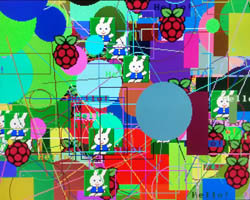 | Draw - demonstration of drawing graphic elements. For the demonstration, alternate between slow rendering and drawing at maximum speed. |
 |
Earth - rotating globe. Software spherical image transformation. |
| 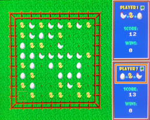 | Eggs - logic game (sound). Based on the game Reversi. The goal is to get as many of your own stones as possible. One player changes stones in the direction of hen-chicken-egg, the other player in the opposite direction. Controls: L right, I up, J left, K down, H help, Q end, P 2 players, D demo, space bar to place stone, Enter ok. Can be played against another player and against the computer. |
| 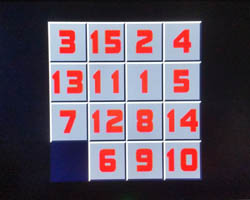 | Fifteen - logic game (sound). The objective is to sort the stones in order from 1 to 15. Controls: L right, I up, J left, K down, Q new game. |
 |
Flag - fluttering flag. |
| 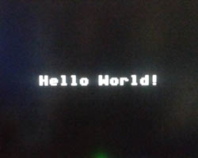 | Hello World - the simplest example of using the PicoQVGA library. |
| 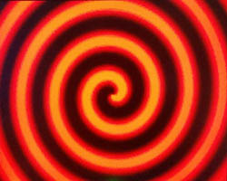 | Hypno - a hypnotic rotating pattern. Example of matrix image transformation. |
 |
Life - cell life simulator (cellular automaton). Cells change at each step according to the number of neighboring cells: for 1 or less a cell dies on isolation, for 4 or more a cell dies on overpopulation, for 3 a new cell is created, for 2 there is no change. In the game, you can switch between 10 screens (slots) and transfer the image between them using the clipboard. In each slot there is a predefined definition of popular combinations. Controls: L right, I up, J left, K down, C copy to clipboard, V insert from clipboard, D clear area, space bar change cell, Enter start/stop generation, 0-9 select slot. |
| 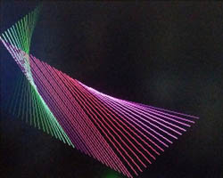 | Lines - relaxation line pattern generator. |
| 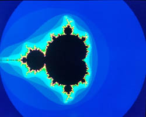 | Mandelbrot - fractal pattern generator of Mandelbrot set. Integer mathematics is used to generate the pattern, which makes the redrawing fast. However, it must be taken into account that as the scale of the display increases, increasing accuracy in the number of digits is required. The used integer and float mathematics are sufficient up to a magnification scale of 10^5, double mathematics up to a scale of 10^10. When zooming in further, only colored lines are displayed instead of the pattern. Controls: E up, S left, D right, X down, Q scale up, A scale down, I switch to integer math (fastest, range up to 10^-5), F switching to float math (slowest, range up to 10^-5), B switching to double math (slowest, range up to 10^-10), O decreasing the number of iteration steps, P increasing the number of iteration steps, space redraw screen. |
| 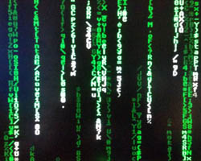 | Matrix Rain - "matrix code rain" simulation. |
| 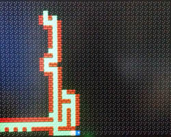 | Maze - the goal is to find a way out of the maze. The mazes are generated randomly programmatically. Controls: J left, I up, L right, K down, H help (showing the door). |
 |
Monoscope - display test, show monoscope. |
| 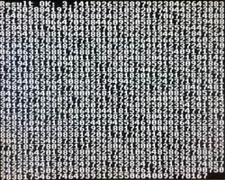 | Pi - calculating the number Pi to 1180 digits. After the calculation, the result is checked against the expected sample. |
| 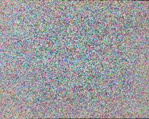 | Pixels - random generation of colored pixels. |
| 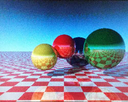 | Raytrace - 3D pattern generation by ray tracing method. Due to the limited color depth of PicoQVGA, raster dithering ("graininess" of the image) is used in the display. |
 |
RGBtest - color test. |
| 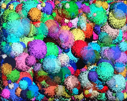 | Spheres - random spheres generation. |
 |
Spots - random generation of spots. |
| 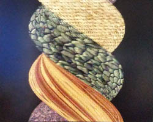 | Twister - twisting of the textured block. It serves as an example of programmatic image deformation. |
| 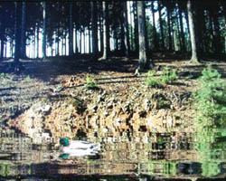 | Water Surface - simulation of rippling water surface (sound). |
Autor: Miroslav Nemecek, http://panda38.sweb.cz
{kind=link}
{kind=link}
{kind=link}
{kind=link}
{kind=link}
{kind=link}
{kind=link}
{kind=link}
{kind=link}
{kind=link}
{kind=link}
{kind=link}
{kind=link}
{kind=link}
{kind=link}
{kind=link}